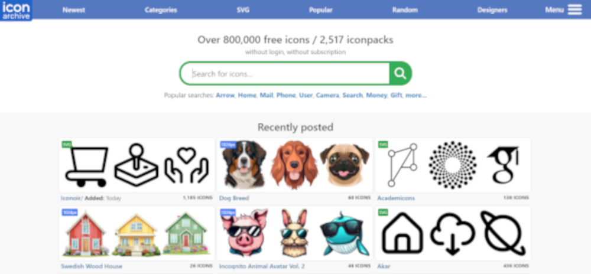
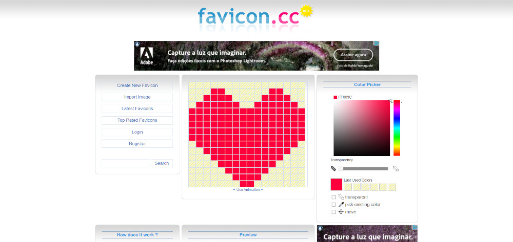
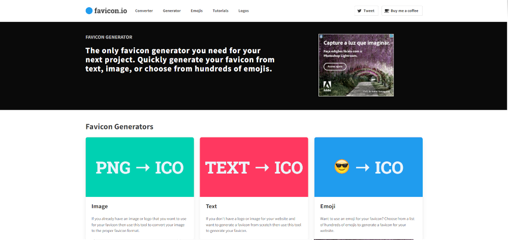

No Icon Archive você poderá selecionar uma imagem já criada, basta fazer o download;
no Favicon.cc, você poderá desenhar seu próprio icone, desde que ele seja simples e fácil de desenhar;
No Ficon.io você podcerá converter imagens, textos, emojis para icone, basta fazer o upload do arquivo selecionado.
Para selecionar uma imagem no site, basta criar uma linha em cima de "title" no "head" e escrever "link:favicon" e e selecionar "Ctrl+space", desta maneira é sóselecionar uma imagem que está junto ao "index.html".